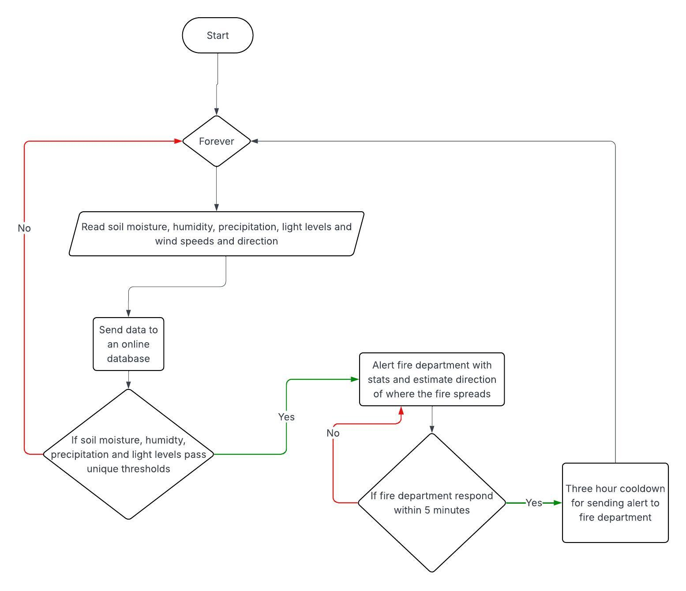

<!DOCTYPE html>
<html lang="en">
<head>
    <title>Evaluation</title>
    <link rel="stylesheet" href="style.css">
</head>
</html>
<body>
    <h1>EVALUATION</h1>
    <div class="button-container">
        <button onclick="location.href='index.html'">Home</button>
        <button onclick="location.href='mb.html'">Meeting the brief</button>
        <button onclick="location.href='i.html'">Investigation</button>
        <button onclick="location.href='pd.html'">Plan and Design</button>
        <button onclick="location.href='c.html'">Create</button>
        <button onclick="location.href='e.html'">Evaluation</button>
        <button onclick="location.href='r.html'">References</button>
    </div>
    <h2>My product against my idea</h2>
    <p>I successfully made an EWS for wildfires using the MicroBit to sound an alarm and a python file to send an email if the sensor values surpassed their unique thresholds. However, I ran out of time to include wind speed and direction to my embedded system and model.</p>
    <h2>Meeting the brief</h2>
    <p>My embedded system met the requirements by having 2 digital inputs, (buttons to start the system and precipitation sensor), and 4 analogue inputs (soil moisture, humidity, light and temperature sensors) which would produce 6 digital outputs (the 5 LEDs and the alarm) based on the data collected. The data collected from the embedded system gets transferred to a python file where it stores it into a CSV file.</p></br>
    <p>My model met the requirements by primarily using open-source data and allowing the user to choose if they want to use digital precipitation (values from my embedded system) or analogue precipitation. Once the model graphed the data using values from each day in 2020, a what-if scenario maker allows the user to change any of the 5 variables that influences wildfire risk and can make a new graph to based on the user’s input.</p>
    <h2>Improvements</h2>
    <p>I could have added wind speed and wind direction to both my model and embedded system which would have made the model more realistic and the equation for ignition more complex. I could have allowed the user to use all the values from my CSV file for the model, making it more relevant to the user’s local area (assuming this project could be made into a proper product). I also would have liked to use a proper wildfire equation to use to make the model more realistic.</p></br>
    <p>Below is a flowchart for a device (assuming I had unlimited resources and time) I would have made based on this project brief.</p>
    
    <a href = "index.html">Home</a> </br>
    <a href = "r.html">References --></a>
</body>
</html>